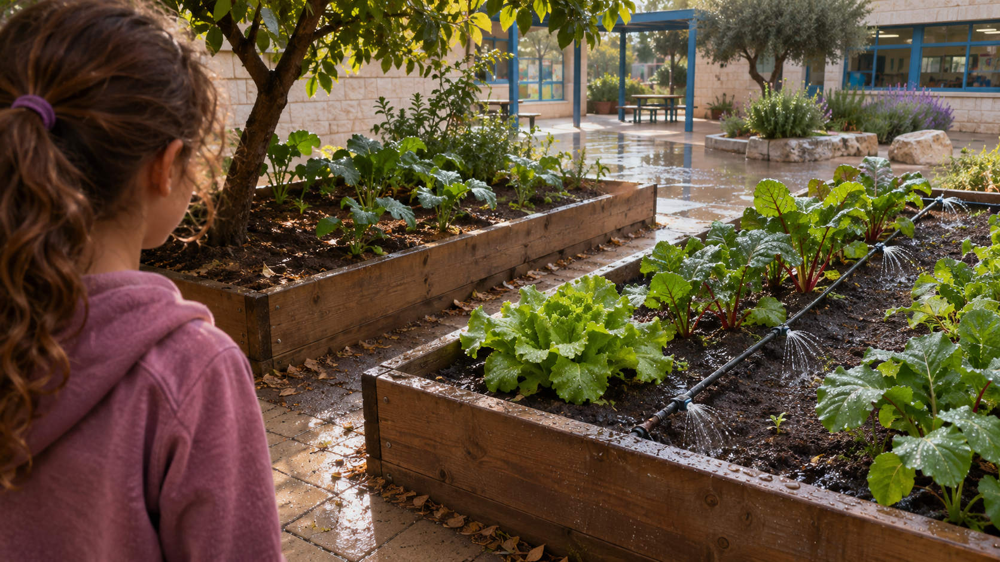

توفير الموارد
استخدام ذكيّ للمياه
هطل مطر ليلًا. فلماذا يُسقى مرّة أخرى؟

حوض الخضروات
«لكنّ المطر هطل طوال الليل!» صاحت ياسمين حين لاحظت أنّ نظام الريّ يعمل مرّة أخرى في الصباح. ياسمين البالغة تسع سنوات تشارك في مشروع حديقة مجتمعيّة مع المدرسة. بجانب كلّ حوض بطاقة باسم النبات والأيّام التي يُعتاد فيها التحقّق إن لزم الريّ. أعضاء المجموعة مسؤولون عن المراقبة، والبالغون مسؤولون عن تشغيل نظام المياه.
في أحد الصباحات ترى ياسمين المرشدة تسقي حوضًا يبدو رطبًا أصلًا من مطر الليل. تسأل إن كان ريّ ثابت وفق جدول أيّام يناسب دائمًا حالة التربة.
ليست كلّ الأحواض متشابهة
الحوض قرب الشجرة في ظلّ جزئيّ بينما الحوض في طرف الحديقة أكثر تعرّضًا للشمس. وبعد ليلة المطر نفسها لا يبدو سطح التربة فيهما متماثلًا.
يقترح طفل في المجموعة سقي الجميع بالكمّيّة نفسها ليكون الأمر عادلًا. تتساءل ياسمين إن كانت «الكمّيّة نفسها» قرارًا صحيحًا حقًّا حين تختلف الظروف والاحتياجات.
تتذكر ياسمين المطر ليلًا جيّدًا. «إن هطل مطر فلا حاجة للسقي اليوم»، تقول. تقترح المرشدة النظر أوّلًا إلى الحوضين. في أحدهما بقيت المياه وقتًا أطول على سطح التربة وفي الآخر تسرّبت بسرعة. الحدث الجوّيّ نفسه لم يخلق بالضرورة الظروف نفسها للجذور.
يشير طفل آخر إلى ورقة تبدو متدلّية قليلًا ويصيح: «هو عطشان!» تفهم ياسمين أنّ الأوراق قد تتغيّر لأسباب متنوّعة، وأنّ المظهر وحده ليس قياسًا مباشرًا لكمّيّة الماء في التربة.
ماذا نرى وماذا لا نرى
تفحص ياسمين سطح التربة فقط حيث تسمح المرشدة وتلاحظ أنّ الطبقة العليا لا تروي بالضرورة عن كلّ التربة تحتها. ونبات يبدو أخضر الآن قد يستجيب بشكل مختلف بعد عدّة أيّام.
تفهم المجموعة أنّه لا يمكن اختيار وقت الريّ وفق مظهر واحد فقط، وأنّه ينبغي معرفة نوع النبات والطقس وتاريخ الريّ.
الماء مورد
تشرح المرشدة أنّ الماء ضروريّ للنباتات وأنّه لا يجوز محاولة «التوفير بأيّ ثمن» حتّى تتضرّر النباتات. الهدف استخدام الكمّيّة المناسبة في الوقت المناسب، وتجنّب ريّ بلا حاجة.
تريد ياسمين مساعدة المرشدة على معرفة متى توجد معلومات كافية لاتّخاذ قرار ومتى يهمّ الفحص مرّة أخرى.
الأسبوع التالي مختلف
بعد عدّة أيّام تأتي موجة حرّ وتتغيّر التربة أسرع. جدول ريّ ناسب أسبوعًا باردًا ليس بالضرورة مناسبًا للأسبوع الجديد.
تفهم ياسمين أنّ المشكلة ليست فقط كم ماء استُخدم أمس، بل كيف يُلائم العلاج حالة متغيّرة من دون جمع معلومات أكثر ممّا يلزم.
في يوم حارّ جدًّا تصل ياسمين إلى الحديقة وتكتشف أنّ لافتة أيّام الريّ بقيت نفسها. تساعد على تذكّر الروتين، لكنّها لا تروي ما حدث في التربة منذ المرّة السابقة.
تسأل المرشدة: «ماذا يحدث إن وفّرنا الماء في المكان الخطأ تمامًا؟» تفهم ياسمين أنّ التوفير الناجح ليس مجرّد تقليل كمّيّة الماء. ينبغي إيجاد توازن بين حاجة النبات والرغبة في عدم استخدام ماء بلا داعٍ.
ما المعروف وما الناقص
من المعروف أيّ أحواض موجودة، ومتى تمّ الريّ، وأيّ طقس كان في بعض الأيّام. وغير معروف حال الماء في التربة على أعماق مختلفة، وما الحاجة الدقيقة لكلّ نبات في مرحلة النموّ الحاليّة.
تسأل ياسمين كيف يمكن لمجموعة أطفال مساعدة المسؤولين عن الريّ على فهم الحاجة، من دون تشغيل أنظمة غير مؤهّلين لتشغيلها بأنفسهم.
قبل أن نبتكر
يصوغ التلاميذ السؤال من جديد: كيف نعرف متى يحتاج النبات حقًّا إلى ماء، وكيف نمنع استخدامًا زائدًا من دون الإضرار به؟ ويقرّرون الفصل بين هدف التوفير والطريق الممكن لتحقيقه.
ما المهمّ قياسه أو توثيقه؟ وهل يمكن مقارنة أحواض مختلفة بعدالة؟ ومن ينبغي أن يتلقّى المعلومات قبل قرار الريّ؟
تلميح من عالم الفضاء
في محطّة الفضاء الدوليّة يُفحص استخدام المياه بدقّة، ويُعاد استخدام مياه مرّت بعلاج وفحوصات جودة. هذا مثال على أهمّيّة المورد، لكنّه ليس تعليمات لكيفيّة سقي حديقة. أيّ طريقة لجمع المعلومات تساعد المرشدة على تقرير متى تلزم المياه ومتى لا؟
بعد القراءة — في ورقة الفريق
تحدّثوا في الفريق وأجيبوا استنادًا إلى معلومات القصّة. إذا نقصت معلومة، اكتبوا سؤالًا للمتابعة.
- من تريدون مساعدته في القصّة؟
- ماذا يحاول أن يفعل وما الذي يصعّب عليه ذلك؟
- ما الذي يحتاج إلى أن يكون قادرًا على فعله؟
- ما الذي تريدون معرفته أيضًا قبل تطوير الأفكار؟